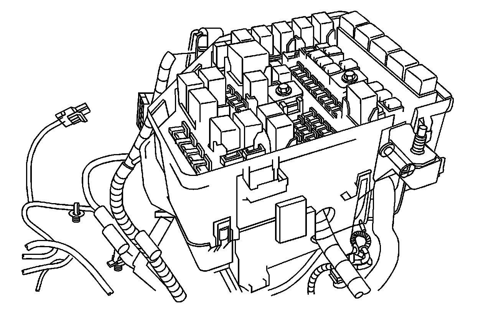
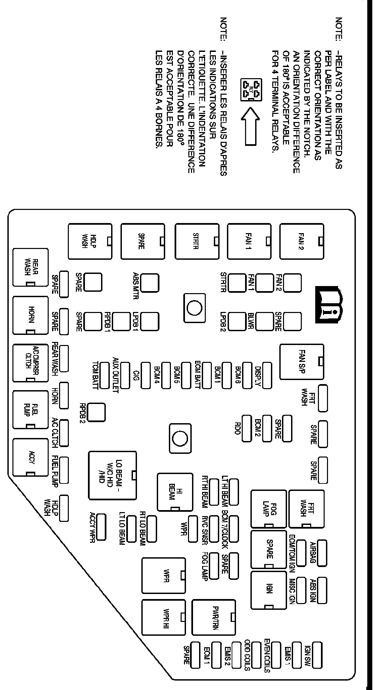

Underhood Fuse Block
UNDERHOOD FUSE BLOCK
The underhood fuse block is located in the engine compartment on the right side of the vehicle.

To access the fuses, push in the two tabs located on each side of the fuse block cover. Then lift the cover off.
Notice: Spilling liquid on any electrical components on your vehicle may damage it. Always keep the covers on any electrical component.

RELAYS - USAGE
FAN 2 Right Side Engine Cooling Fan Motors
FAN S/P Series/Parallel Engine Cooling Fan
FRT WASH Front Washer Pump
FAN 1 Left Side Engine Cooling Fan Motors
FOG LAMP Front Fog Lamps
SPARE Spare
IGN Ignition Switch (ON)
STRTR Starter Solenoid
PWR/TRN Powertrain/Engine Control Module
HI BEAM High-Beam Headlamps
SPARE Spare
WPR Windshield Wiper System - On/Off
WPR HI Windshield Wiper System - Low/High
HDLP WASH Headlamp Washer Pump (Option)
LO BEAM - W/O HID/HID Low-Beam Headlamps
REAR WASH Rear Washer Pump
HORN Horn
A/C CMPRSR CLTCH Air Conditioning Compressor Clutch
FUEL PUMP Fuel Pump
ACCY Accessory Power (Rear Wipers, Inside Rearview Mirror)
J CASE FUSES - USAGE
FAN 2 Right Cooling Fan Motor
SPARE Spare
FAN 1 Left Cooling Fan Motor
BLWR Front Blower Motor Assembly
STRTR Starter Solenoid
LPDB 2 LRPDB (Left Side Rear Power Distribution Box)
ABS MOTOR Antilock Brake System Module
LPDB 1 LRPDB (Left Side Rear Power Distribution Box)
RPDB 1 RRPDB (Right Side Rear Power Distribution Box)
SPARE Spare
SPARE Spare
RPDB 2 RRPDB (Right Side Rear Power Distribution Box)
MINI FUSES - USAGE
FRT WASH Front Washer Pump
SPARE Spare
SPARE Spare
AIRBAG Sensing Diagnostic Module (SDM), Occupant Sensor Display, Instrument Cluster
ABS IGN Antilock Braking System Ignition, Variable Effort Steering
IGN SW Ignition Switch, Immobilizer Module
ECM/TCM IGN Engine Control Module/Transmission Control Module Ignition Power, Mass Airflow Sensor (V6)
MISC IGN Air Quality Sensor
EMIS 1 Pre 02 Sensors, Cam Phasor (V6), Canister Purge (V6), Intake Manifold Tuning Valve (V6)
SPARE Spare
DISPLY Instrument Panel Cluster, Climate Control Module, Diagnostic Link Connector
BCM 2 LED Instrument Panel Dimming, Overhead Lamps, Vanity Lamps
EVEN COILS Even Ignition Coils, Even Fuel Injectors
BCM 6 Right Side Rear Stoplamp, Turn Lamps, Key Capture Solenoid
RDO Radio
ODD COILS Odd Ignition Coils, Odd Fuel Injectors
BCM 1 Body Control Module (BCM) Power
LT HI BEAM Left Side High-Beam Headlamp
BCM 7/CLOCK Switch Dimming, Analog Clock
SPARE Spare
EMIS 2 Cooling Fan Relays, Air Conditioning Clutch Relay, Post O2 Sensors, Mass Airflow Sensor (V8), Canister Purge (V8)
ECM BATT Engine Control Module (ECM)
RT HI BEAM Right Side High-Beam Headlamp
RVC SNSR Battery Regulated Voltage Control Sense
FOG LAMP Front Fog Lamps
ECM 1 Engine Control Module (ECM)
BCM 5 Left Side Front Turn Lamps, Rear Stoplamps, Turn Lamps
WPR Windshield Wiper Motor
SPARE Spare
BCM 4 Center High-Mounted Stoplamp (CHMSL), Back-up Lamps
CIG Instrument Panel Accessory Power Outlet (Cigarette Lighter)
RT LO BEAM Right Side Low-Beam Headlamp
AUX OUTLET Center Console Accessory Power Outlet
LT LO BEAM Left Side Low-Beam Headlamp
TCM BATT Transmission Control Module (TCM)
ACCY WPR Rear Wiper Motor & Switch, Inside Rearview Mirror
SPARE Spare
SPARE Spare
REAR WASH Rear Washer Pump
HORN Horn Assembly
A/C CLTCH Air Conditioning Compressor Clutch
FUEL PUMP Fuel Pump
CIRCUIT BREAKER - USAGE
HDLP WASH Headlamp Washer Pump